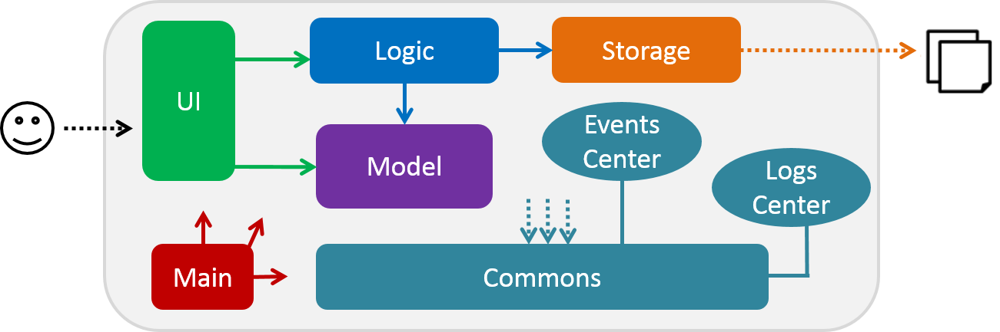
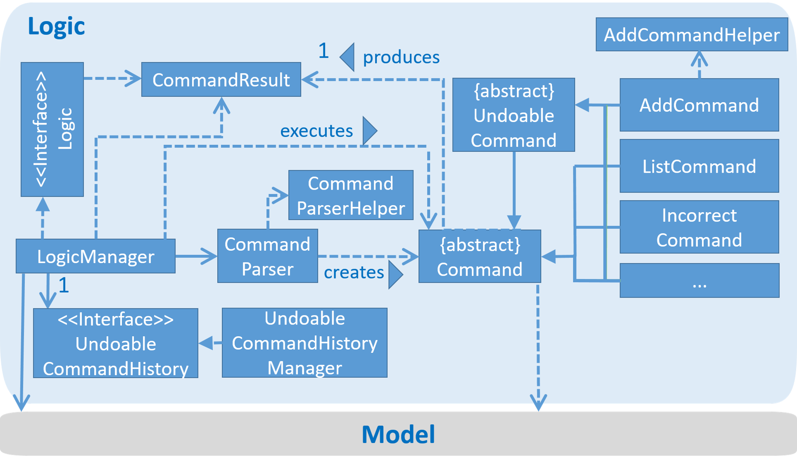
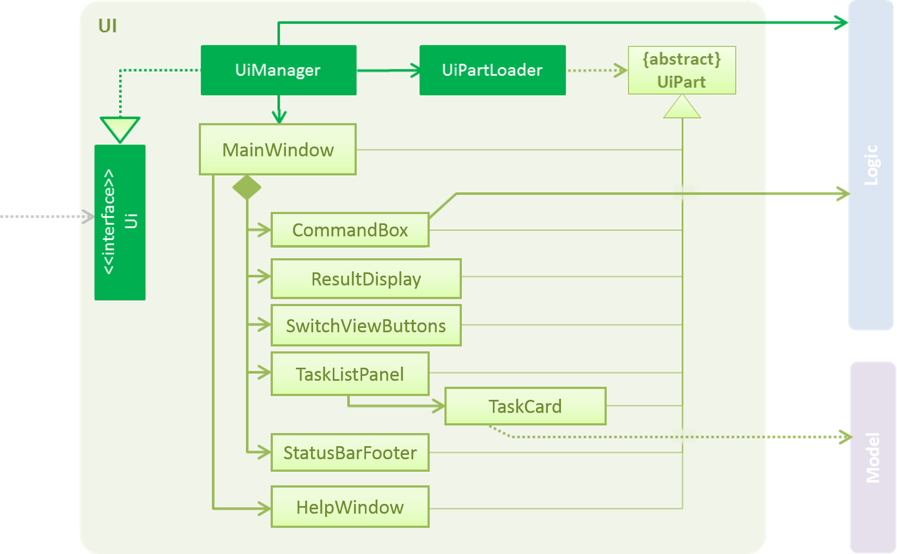
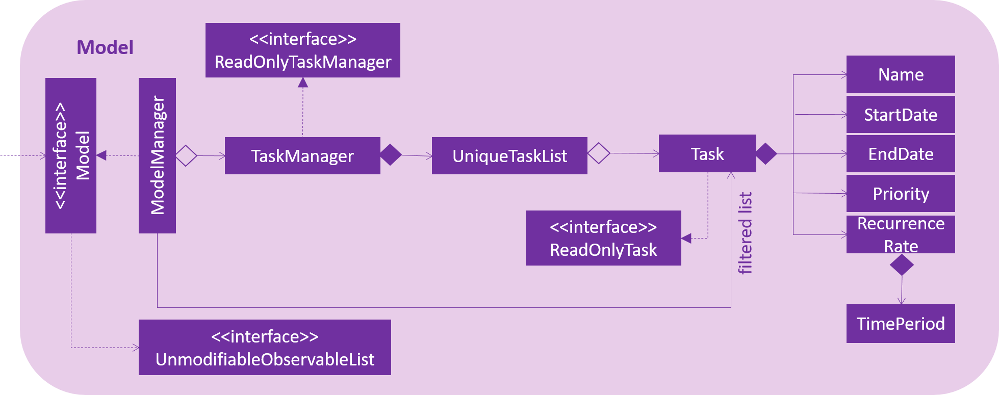

DearJim is a revolutionary task manager designed to help you organise your tasks that is simple and easy to use. DearJim is a Java desktop application that has a GUI, and the main mode of input in DearJim is through keyboard commands.
This guide describes the design and implementation of DearJim. It will help you understand how DearJim works and how you can further contribute to its development. We have organised this guide in a top-down manner so that you can understand the big picture before moving on to the more detailed sections.
JDK 1.8.0_60 or later
Having any Java 8 version is not enough.
This app will not work with earlier versions of Java 8.
Buildship Gradle Integration plugin from the Eclipse Marketplace
File > ImportGradle > Gradle Project > Next > NextBrowse, then locate the project's directoryFinish
- If you are asked whether to 'keep' or 'overwrite' config files, choose to 'keep'.
- Depending on your connection speed and server load, it can even take up to 30 minutes for the set up to finish
(This is because Gradle downloads library files from servers during the project set up process)- If Eclipse auto-changed any settings files during the import process, you can discard those changes.

The Architecture Diagram of DearJim
The Architecture Diagram given above explains the high-level design of the App.
Given below is a quick overview of each component.
Main has only one class called MainApp. It is responsible for,
Commons represents a collection of classes used by multiple other components.
Two of those classes play important roles at the architecture level.
EventsCentre : This class (written using Google's Event Bus library)LogsCenter : Used by many classes to write log messages to the App's log file.The rest of the App consists four components.
UI : The UI of the App.Logic : The command executor.Model : Holds the data of the App in-memory.Storage : Reads data from, and writes data to, the hard disk.Each of the four components
interface with the same name as the Component.{Component Name}Manager class.For example, the Logic component (see the class diagram given below) defines its API in the Logic.java
interface and exposes its functionality using the LogicManager.java class.

The class diagram for the Logic Component of DearJim
The Sequence Diagram below shows how the components interact for the scenario where the user issues the
command delete 1.
The sequence diagram for the scenario
delete 1
Note how the
Modelsimply raises aTaskManagerChangedEventwhen the Task Manager data are changed,
instead of asking theStorageto save the updates to the hard disk.
The diagram below shows how the EventsCenter reacts to that event, which eventually results in the updates
being saved to the hard disk and the status bar of the UI being updated to reflect the 'Last Updated' time.

The sequence diagram showing the
TaskManagerChangedEventand effects onStorageandUI
Note how the event is propagated through the
EventsCenterto theStorageandUIwithoutModelhaving
to be coupled to either of them. This is an example of how this Event Driven approach helps us reduce direct
coupling between components.
The sections below give more details of each component.

The class diagram for the UI component of DearJim
API : Ui.java
The UI consists of a MainWindow that is made up of parts e.g.CommandBox, ResultDisplay, TaskListPanel, TaskCard, SwitchViewButtons, StatusBarFooter, etc. All these, including the MainWindow, inherit from the abstract UiPart class
and they can be loaded using the UiPartLoader.
The UI component uses JavaFx UI framework. The layouts of these UI parts are defined in matching .fxml files
that are in the src/main/resources/view folder.
For example, the layout of the MainWindow is specified in
MainWindow.fxml
The UI component,
Logic component.Model so that the UI can auto-update when data in the Model change.UI accordingly.The class diagram for the Logic component of DearJim
API : Logic.java
Logic uses the CommandParser class to parse the user command.Command object which is executed by the LogicManager.Model (e.g. adding a task) and/or raise events.History if command executed is an UndoableCommand.CommandResult object which is passed back to the UI.Given below is the Sequence Diagram for interactions within the Logic component for the execute("delete 1")
API call.

The sequence diagram for the interactions within the
Logiccomponent forexecute("delete 1")

The class diagram for the Model component of DearJim
API : Model.java
The Model,
UnmodifiableObservableList<ReadOnlyTask> that can be 'observed' e.g. the UI can be bound to this list
The class diagram for the Storage component of DearJim
API : Storage.java
The Storage component,
UserPref objects in json format and read it back.Classes used by multiple components are in the seedu.taskmanager.commons package.
Examples of these classes include the StringUtil class, which has the containsIgnoreCase(String, String) method, and CollectionUtil class, which has the isAnyNull(Object...) method.
We are using java.util.logging package for logging. The LogsCenter class is used to manage the logging levels
and logging destinations.
logLevel setting in the configuration fileLogger for a class can be obtained using LogsCenter.getLogger(Class) which will log messages according toConsole and to a .log file.Logging Levels
SEVERE : Critical problem detected which may possibly cause the termination of the applicationWARNING : Application can continue running, but minor errors may occurINFO : Information showing the noteworthy actions by the AppFINE : Details that is not usually noteworthy but may be useful in debuggingCertain properties of the application can be controlled (e.g App name, logging level) through the configuration file
(default: config.json):
Tests can be found in the ./src/test/java folder.
In Eclipse:
If you are not using a recent Eclipse version (i.e. Neon or later), enable assertions in JUnit tests
as described here.
src/test/java folder and chooseRun as > JUnit TestUsing Gradle:
We have two types of tests:
GUI Tests - These are System Tests that test the entire App by simulating user actions on the GUI.
These are in the guitests package.
seedu.taskmanager.commons.UrlUtilTestseedu.taskmanager.storage.StorageManagerTestHybrids of unit and integration tests. These tests are checking multiple code units as well as
how the are connected together.
e.g. seedu.taskmanager.logic.LogicManagerTest
Headless GUI Testing :
Thanks to the TestFX library we use,
our GUI tests can be run in the headless mode.
In the headless mode, GUI tests do not show up on the screen.
That means the developer can do other things on the Computer while the tests are running.
See UsingGradle.md to learn how to run tests in headless mode.
See UsingGradle.md to learn how to use Gradle for build automation.
We use Travis CI to perform Continuous Integration on our projects.
See UsingTravis.md for more details.
Here are the steps to create a new release.
v0.1A project often depends on third-party libraries. For example, DearJim depends on the
Jackson library for XML parsing. Managing these dependencies
can be automated using Gradle. For example, Gradle can download the dependencies automatically, which
is better than these alternatives.
a. Include those libraries in the repo (this bloats the repo size)
b. Require developers to download those libraries manually (this creates extra work for developers)
Priorities: High - * * * Medium - * * Low - *
| Priority | As a ... | I want to ... | So that I can... |
|---|---|---|---|
* * * |
new user | see instructions on how to use the app | refer to instructions when I forget how to use the App |
* * * |
user | add tasks to the todo list | be reminded of what to do |
* * * |
user | add tasks with deadline | remember by what time I have to complete a task |
* * * |
user | add tasks with timeframe | know what I have to attend an event |
* * * |
user | view upcoming tasks in chronological order | check what I need to do / have to do soon |
* * * |
user | search for details on a task or event | view what needs to be done |
* * * |
user | delete a task that has been completed | completely remove it from my task manager |
* * * |
user | mark a task as completed upon completion | keep an archive of tasks that I have completed |
* * * |
user | view tasks that I have completed | recall what I have completed |
* * * |
user | undo my actions | reverse any mistake that I have made |
* * * |
user | redo my undo | correct any accidental undo |
* * * |
user | edit tasks | keep them up to date |
* * * |
user | store my tasks in different locations | share the tasks with multiple devices |
* * |
user | sync my task with other computers | keep track of what to do anywhere |
* * |
user | enter synonyms for the commands | use natural language to accomplish what I want |
* |
user | tag tasks | classify them and search for them according to these tags |
* |
user | call up the todo list with a simple keystroke | start the application anytime during my workflow |
(For all use cases below, the System is the Task Manager and the Actor is the user, unless specified otherwise)
MSS
add command, specifying details of the task to be addedadd command, and adds the task to the current task listUse case ends
Extensions
1a. User enters a task name that needs to be escaped as it contains values that CommandParser is unable to parse correctly.
1a1. TaskManager's instant parsing feature reflects to the user that his / her input is being parsed into the wrong field
1a2. User uses the double inverted commas to escape the task name
Use case resumes at step 2
2a. User enters an input that does not follow the add command format
2a1. TaskManager displays an error message on the GUI, informing the user of the correct format for the
addcommand and an exampleaddcommand
Use case resumes at step 1
2b. User is currently at done list view
2b1. TaskManger displays an error message on the GUI, informing the user that he / she is unable to perform the add command in done list view, and prompts the user to switch to undone list view instead to perform the add command
Use case resumes at step 1
3a. User identifies a mistake in the details of the task added
3a1. User edits the task details (UC03)
Use case ends
MSS
list commandlist commandUse case ends
Extensions
2a. User enters an input that does not follow the list command format
2a1. TaskManager displays an error message on the GUI, informing the user of the correct format for the
listcommand and an examplelistcommand
Use case resumes at step 1
2b. The list is empty
Use case ends
MSS
edit command, specifying the INDEX of the task in the list to be edited, the fields to be edited and their new valuesedit command and looks for the task in the listUse case ends
Extensions
2a. The list is empty
Use case ends
3a. Index is not given
3a1. TaskManager displays an error message on the GUI, informing the user of the correct format for the
editcommand and an exampleeditcommand
Use case resumes at step 3
3b. User enters a task name that needs to be escaped as it contains values that CommandParser is unable to parse rightly.
3b1. TaskManager's instant parsing feature reflects to the user that his / her input is being parsed into the wrong field
3b2. User uses the double inverted commas to escape the task name
Use case resumes at step 3
4a. The given index is invalid
4a1. TaskManager displays an error message on the GUI, informing the user that the given index is invalid and thus cannot edit any task
Use case resumes at step 3
4b. User enters an end date that occurs before the start date.
4b1. TaskManager displays an error message on the GUI, informing the user that the end date must occur after the start date
Use case resumes at step 3
4c. User enters an input that does not follow the edit command format
4c1. TaskManager displays an error message on the GUI, informing the user of the correct format for the
editcommand and an exampleeditcommand
Use case resumes at step 3
MSS
delete command, specifying the INDEX of the task in the list to be deleteddelete command and looks for the task in the listUse case ends
Extensions
2a. The list is empty
Use case ends
4a. The given index is invalid
4a1. TaskManager displays an error message on the GUI, informing the user that the given index is invalid and thus cannot delete any task
Use case resumes at step 3
4b. User enters an input that does not follow the delete command format
4b1. TaskManager displays an error message on the GUI, informing the user of the correct format for the
deletecommand and an exampledeletecommand
Use case resumes at step 3
MSS
undo commandundo commandExtensions
1a. User enters an undo command, followed by some arguments
1a1. TaskManager parses the
undocommand, ignoring the arguments that follow
Use case resumes at step 3
3a. There is no previous undoable command
3a1. TaskManager indicates that there is nothing to undo.
Use case ends.
4a. User wants to reverse the undo command
4a1. User enters the
redocommand (UC06)
Use case ends.
MSS
undo command successfully (UC05)redo commandredo commandundo, redoing the effects of that commandExtensions
1a. User enters a non-undoable command
1a1. TaskManager handles the command
Use case resumes at step 2
1b. User enters an undoable command
1b1. TaskManager handles the command and clears the history of commands to
redo
1b2. User enters aredocommand
1b3. TaskManager parses theredocommand and indicates that there is nothing toredo
Use case ends.
2a. User enters a redo command, followed by some arguments
1a1. TaskManager parses the
redocommand, ignoring the arguments that follow
Use case resumes at step 3
1.8.0_60 or higher installed.Windows, Linux, Unix, OS-X
Able to work well as number of tasks grows
Alternative names for a single command
Code that is readable and easy to contribute towards
| Product | Strength | Weaknesses |
|---|---|---|
| Wunderlist |
|
|
| Todo.txt |
|
|
| Google Calendar |
|
|
| Remember the milk |
|
|
Summary: We observed that these products have very good features, but we realised that none of these products have the specific combination of features that caters to our target audience. Therefore, we are incorporating some of the good features such as minimalistic interface and ability to sync with multiple computers while designing DearJim carefully to avoid the pitfalls found in these products, to make a targeted product for our intended audience.